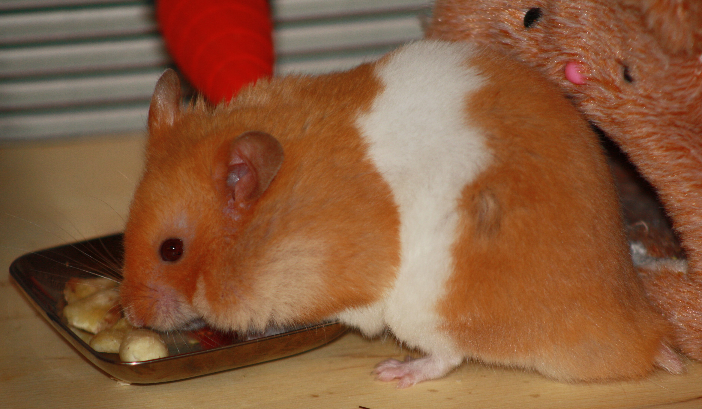

Counting rings...
07-Jun-2017 | Milku
rather than stars.
It's Day 7 of 30 Days Wild. I can't believe we've been doing this for a week already. My humans are planning to venture into the wild weather later so hopefully will have something interesting to report. In the meantime, they've been working indoors, checking out logs.
Be assured that my humans didn’t chop down a tree just to complete this activity. Oh no. They’d salvaged some tree trunks from where a garden was being cleared. Actually they wanted them for their wood burning stove, but cutting them into logs so they could see the tree rings would help prepare for them having a nice warm house some time.
Our book of suggestions gave us a few thoughts on what to do with these lumps of wood.
Activity #187 – guess a tree’s age – as different tree species grow at different rates each year you can find out the approximate age of a tree by measuring around the trunk and dividing the girth by the average growth rate. Just one stumbling block for my humans with this one…they weren’t sure what sort of tree they were dealing with. But have guessed at it being a beech tree.
They measured a circumference (or girth) of about 15 inches. They had to use inches given the website they'd found with beech tree growth rates was an American one and it wanted measurements in inches. It suggested our tree was about 19 years old.
So they moved on to Activity #232 – counting tree rings to guess the age of the tree. One light ring plus one dark ring equals a year of a tree’s growth. It was difficult to count them and my little humans were glad they only had small tree trunks to deal with.

After a couple of re-counts, the little humans thought the tree was 20 years old.
Then they tried reading the weather rings – activity #188.
Apparently, the width of a tree ring tells you what the weather was like when the tree was growing. Narrow rings suggest the tree was short of water. Wide rings mean that the tree got lots of water. I think some trees will have nice wide rings this year. And they did spot a few differences in the width of the rings.
Not content with just using the big lumps of wood, the humans got creative too with some of the smaller branches. They cut tiny discs off.
They sanded them smooth.
And they decorated them.
With the addition of a bit of varnish, they look great.